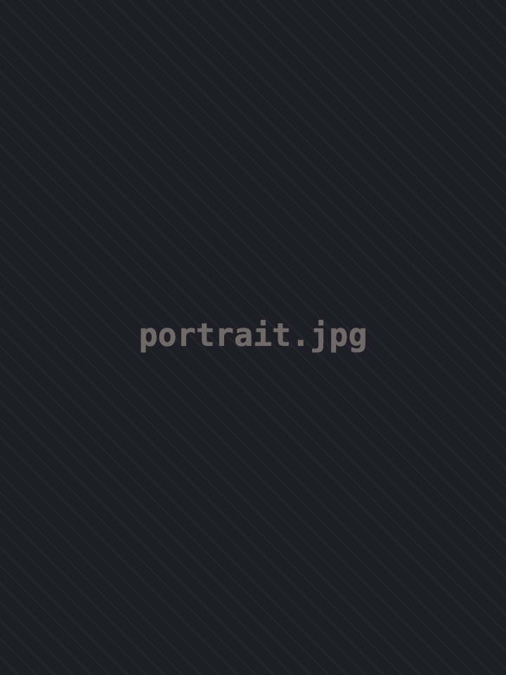
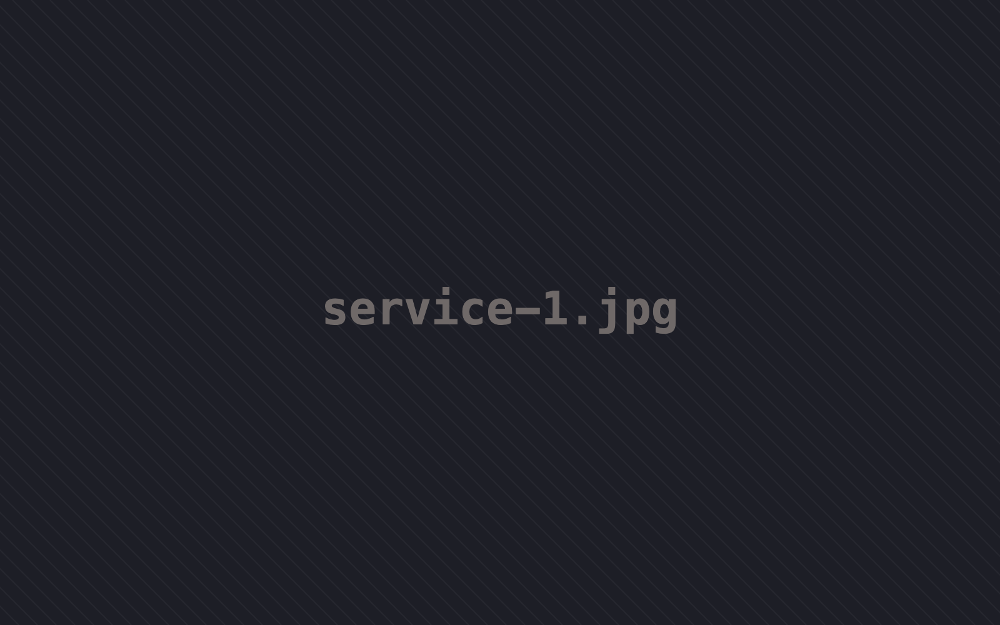
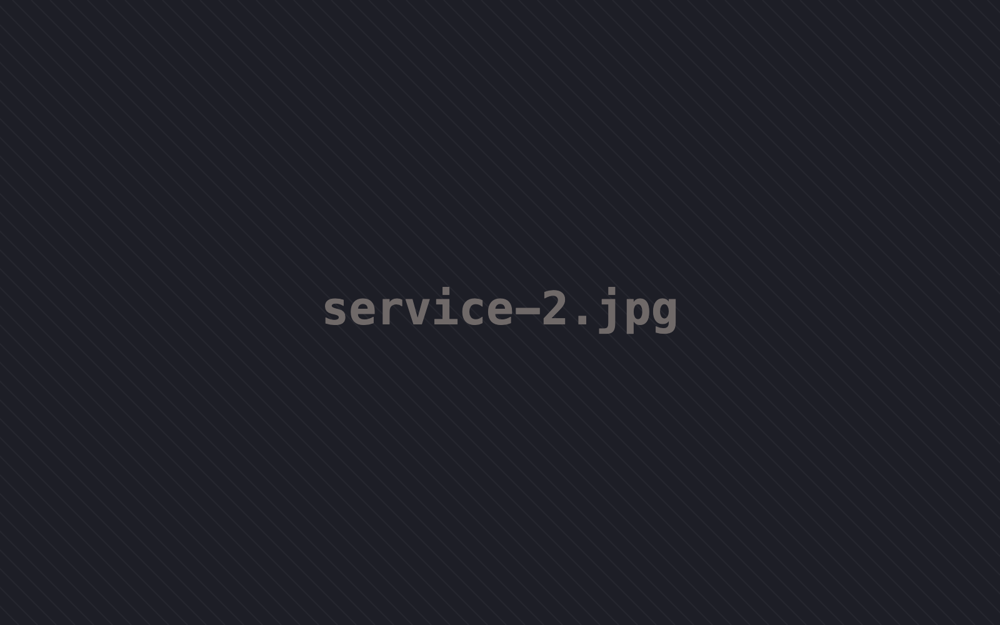

Od pierwszych chwil życia wspieramy kobiety w ciąży, mamy po porodzie, wcześniaki i noworodki oraz ich rodziny.

Dobra opieka okołoporodowa to nie tylko procedury i leczenie. To także rozmowa, zrozumienie, obecność bliskich i poczucie, że rodzina nie jest sama.

Pacjentki hospitalizowane na oddziale patologii ciąży, kobiety w ciąży powikłanej oraz mamy po porodzie i w okresie połogu.

Wcześniaki i noworodki wymagające specjalistycznej opieki oraz rodzice dzieci długo hospitalizowanych w oddziale neonatologii.